install.packages(c("fitzRoy", "tidyverse", "broom", "modelsummary", "ggdist"))Measuring Uncertainty
Set up
To complete this session, you need to load in the following R packages:
Install packages
To install new R packages, run the following (excluding the packages you have already installed):
Introduction
This session, we are going to bring everything together. We will explore the linear relationship between two variables focusing not only on the direction and strength of that relationship, but also how certain we can be in that the relationship. At the end of this session you will be able to describe how those two variables relate to one another, and whether that relationship is statistically significant.
As usual, we will build our understanding using an example. As an Australian (more specifically, a Victorian), I love the Australian Football League. It’s the best sport out there! We’re going to depart from our usual political science examples to explore some interesting relationships in the way AFL is played.
First, let’s watch this brief introduction to the game:
Let’s explore the relationship between disposal efficiency and Dream Team points. Your disposal efficiency describes the percentage of your disposals of the ball (kicks, handballs, etc.) that lead to a positive outcome for your team. The Dream Team is a popular fantasy football competition. Each player gets points for various actions they take on the field. For example, you get six Dream Team points for scoring a goal and you lose three points for having a free kick awarded against you. This is a useful proxy measure of a player’s effectiveness on the field.
Loading in our data
We are going to explore some different player-level outcomes from the 10th round of the most recent AFLW season. This is the last round played before finals. First, we need to collect our data. fitzRoy::fetch_player_stats() retrieves some useful variables about each player from the official AFL website.
afl_df <- fetch_player_stats(2024, round = 10, comp = "AFLW")
afl_df# A tibble: 379 × 70
providerId utcStartTime status compSeason.shortName round.name
<chr> <chr> <chr> <chr> <chr>
1 CD_M20242641006 2024-11-01T08:15:00.0… CONCL… 2024 NAB AFLW Season Week 10
2 CD_M20242641006 2024-11-01T08:15:00.0… CONCL… 2024 NAB AFLW Season Week 10
3 CD_M20242641006 2024-11-01T08:15:00.0… CONCL… 2024 NAB AFLW Season Week 10
4 CD_M20242641006 2024-11-01T08:15:00.0… CONCL… 2024 NAB AFLW Season Week 10
5 CD_M20242641006 2024-11-01T08:15:00.0… CONCL… 2024 NAB AFLW Season Week 10
6 CD_M20242641006 2024-11-01T08:15:00.0… CONCL… 2024 NAB AFLW Season Week 10
7 CD_M20242641006 2024-11-01T08:15:00.0… CONCL… 2024 NAB AFLW Season Week 10
8 CD_M20242641006 2024-11-01T08:15:00.0… CONCL… 2024 NAB AFLW Season Week 10
9 CD_M20242641006 2024-11-01T08:15:00.0… CONCL… 2024 NAB AFLW Season Week 10
10 CD_M20242641006 2024-11-01T08:15:00.0… CONCL… 2024 NAB AFLW Season Week 10
# ℹ 369 more rows
# ℹ 65 more variables: round.roundNumber <int>, venue.name <chr>,
# home.team.name <chr>, home.team.club.name <chr>, away.team.name <chr>,
# away.team.club.name <chr>, player.jumperNumber <int>,
# player.photoURL <chr>, player.player.position <chr>,
# player.player.player.playerId <chr>, player.player.player.captain <lgl>,
# player.player.player.playerJumperNumber <int>, …In this round, 379 players played in 9 games. We have access to 70 variables describing how these players performed in this round.
Uncovering the relationship between two variables
First, we want to determine the direction of the relationship between our variables of interest. When a player’s disposal efficiency increases, do they tend to get a greater or fewer number of Dream Team points?
We can often identify the direction of the relationship by plotting our data:
ggplot(afl_df, aes(x = disposalEfficiency, y = dreamTeamPoints)) +
geom_point() +
theme_minimal()
The relationship looks positive: as your efficiency increases, so too do your Dream Team points. This makes sense. A good player is more effective (tends to produce good results from their kicks and handballs). Our Dream Team points are a proxy for an effective player. However, there is a fair bit of noise here. This relationship doesn’t look very strong.
Next, we want to formalize that relationship. We want to find the line that best fits all of these points. In other words, what line minimizes the distance between itself and all of the observed points marking each player’s Dream Team points and disposal efficiency?
Tip
Remember, this is the basis for Ordinary Least Squares regression.
We can use ggplot2::geom_smooth() to fit this line graphically:
ggplot(afl_df, aes(x = disposalEfficiency, y = dreamTeamPoints)) +
geom_point() +
geom_smooth(method = "lm", se = F) +
theme_minimal()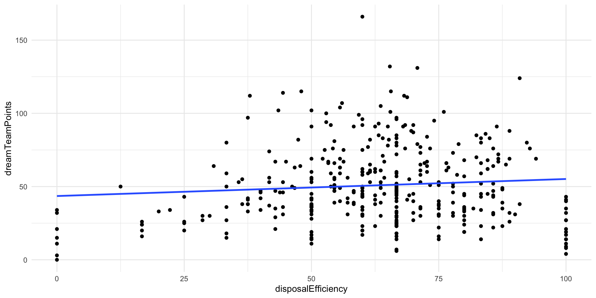
We correctly identified that there is a positive relationship between those two variables. Yay!
Often we need more information than simply the direction of a relationship. For example, we want to know how pronounced the effect of a one-unit increase in our independent variable will be on our outcome of interest. Here, we want to learn how many additional Dream Team points are associated with a a one percentage point increase in a player’s disposal efficiency, on average.
We can use lm() to determine this information:
Tip
Remember to put your dependent variable first, then a ~, then you independent variable(s).
Call:
lm(formula = dreamTeamPoints ~ disposalEfficiency, data = afl_df)
Residuals:
Min 1Q Median 3Q Max
-51.16 -18.77 -4.29 14.42 115.49
Coefficients:
Estimate Std. Error t value Pr(>|t|)
(Intercept) 43.53517 4.42859 9.830 <2e-16 ***
disposalEfficiency 0.11626 0.06751 1.722 0.0858 .
---
Signif. codes: 0 '***' 0.001 '**' 0.01 '*' 0.05 '.' 0.1 ' ' 1
Residual standard error: 25.71 on 377 degrees of freedom
Multiple R-squared: 0.007806, Adjusted R-squared: 0.005174
F-statistic: 2.966 on 1 and 377 DF, p-value: 0.08585Great! We now have a linear regression model of the relationship between a player’s disposal efficiency and their Dream Team points.
We predict that players that have a disposal efficiency of zero (none of their disposals result in a good outcome for their team) have, on average, 43.5 Dream Team points. Every one percentage point increase in a player’s efficiency is associated with a gain of 0.116 Dream Team points, on average.
Great! We can use this information to understand this relationship more meaningfully. For example, we note that a player with a disposal efficiency of 1.16 percentage points greater than another player has, on average, 10 more Dream Team points than the other player.
Uncertainty around this relationship
How confident can we be in this modeled relationship? Am I really sure that efficiency has a significant, positive impact on a player’s Dream Team points? I mean, that line looks pretty flat. Could this really just be driven by noise? To answer these questions, we need to draw on everything we have learned about probability theory and inference so far.
We want to make a claim about the relationship between some outcome and some variables that we think are important determinants of that outcome. Here, we used the observed Dream Team points gained by a player and their disposal efficiency for round 10 in the 2024 season of AFLW to make a broader statement about the relationship between efficiency and Dream Team points. We are not actually interested in the specific relationship between these variables in round 10 of the 2024 season: we want to know whether a player’s efficiency is an important determinant of their Dream Team points generally.
In other words, we are inferring from a sample a general relationship. You can imagine that if we had a different sample, a linear regression model would have a different set of estimates for our intercept and coefficient. They would (hopefully) look very similar to the ones we found above, but they would be slightly different. For example, imagine that some of the random elements of a game of AFL were different: the wind blew in a different way, the crowd cheered a little louder, a player ran a little faster. These would change the game played in slight and random ways. A player might make a clanger instead of a clean disposal. The wind may blow an otherwise goal into a behind. Consequently, the players’ disposal efficiency would be slightly different. We would subsequently get different model estimates.
Let’s illustrate this. To be able to access this variation to illustrate my point, I am going to take pure random samples from our 379 players. Let’s take a completely random sample of 250 players from our data and fit our regression against that sample:
afl_sample_1 <- afl_df |>
sample_n(250) |>
select(player.player.player.givenName,
player.player.player.surname,
dreamTeamPoints,
disposalEfficiency)
afl_sample_1# A tibble: 250 × 4
player.player.player.givenName player.player.player.surname dreamTeamPoints
<chr> <chr> <dbl>
1 Bridie Hipwell 17
2 Katherine Smith 39
3 Julie O'Sullivan 29
4 Amy Franklin 30
5 Taylah Gatt 41
6 Brooke Lochland 56
7 Ruby Sargent-Wilson 51
8 Rene Caris 14
9 Montana Ham 46
10 Isabel Huntington 49
# ℹ 240 more rows
# ℹ 1 more variable: disposalEfficiency <dbl># A tibble: 2 × 5
term estimate std.error statistic p.value
<chr> <dbl> <dbl> <dbl> <dbl>
1 (Intercept) 44.9 5.43 8.28 7.92e-15
2 disposalEfficiency 0.0885 0.0834 1.06 2.89e- 1Okay, so we got a different intercept and coefficient estimates than we got above. This is despite the fact that I took a pure random sample from the full set of players.
Let’s do this again. I will take a different random sample of 250 players and fit a regression for them:
afl_sample_2 <- afl_df |>
sample_n(250) |>
select(player.player.player.givenName,
player.player.player.surname,
dreamTeamPoints,
disposalEfficiency)
afl_sample_2# A tibble: 250 × 4
player.player.player.givenName player.player.player.surname dreamTeamPoints
<chr> <chr> <dbl>
1 Brooke Walker 48
2 Abbie McKay 0
3 Clara Fitzpatrick 19
4 Nat Exon 49
5 Alana Porter 40
6 Niamh Kelly 67
7 Gabby Biedenweg-Webster 11
8 Emma Swanson 38
9 Georgia Gee 91
10 Georgia Nanscawen 91
# ℹ 240 more rows
# ℹ 1 more variable: disposalEfficiency <dbl># A tibble: 2 × 5
term estimate std.error statistic p.value
<chr> <dbl> <dbl> <dbl> <dbl>
1 (Intercept) 45.5 5.52 8.24 9.87e-15
2 disposalEfficiency 0.0882 0.0837 1.05 2.93e- 1Again, we got a different set of coefficients. The only thing driving this difference is random chance. We took a random sample of the same number of players as above from the same population.
Let’s go again:
afl_sample_3 <- afl_df |>
sample_n(250) |>
select(player.player.player.givenName,
player.player.player.surname,
dreamTeamPoints,
disposalEfficiency)
afl_sample_3# A tibble: 250 × 4
player.player.player.givenName player.player.player.surname dreamTeamPoints
<chr> <chr> <dbl>
1 Joanne Cregg 30
2 Sophie Alexander 51
3 Ash Riddell 111
4 Shanae Davison 18
5 Brodee Mowbray 31
6 Paige Trudgeon 38
7 Mikayla Hyde 20
8 Ella Roberts 78
9 Daria Bannister 76
10 Hannah Priest 38
# ℹ 240 more rows
# ℹ 1 more variable: disposalEfficiency <dbl># A tibble: 2 × 5
term estimate std.error statistic p.value
<chr> <dbl> <dbl> <dbl> <dbl>
1 (Intercept) 38.7 5.40 7.18 8.33e-12
2 disposalEfficiency 0.185 0.0825 2.25 2.55e- 2Again, we get different estimates. The only difference was pure random chance.
We can see these differences more clearly by plotting them:
afl_sample_1 |>
mutate(sample = "One") |>
bind_rows(
mutate(afl_sample_2, sample = "Two")
) |>
bind_rows(
mutate(afl_sample_3, sample = "Three")
) |>
ggplot(aes(x = disposalEfficiency, y = dreamTeamPoints, colour = sample)) +
geom_point(alpha = 0.5) +
geom_smooth(method = "lm", se = F) +
theme_minimal()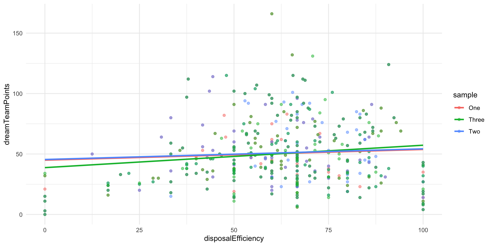
Each of our pure random samples led our model to estimate a slightly different relationship between disposal efficiency and Dream Team points. For example, sample one leads us to believe that a one percentage point increase in a player’s disposal efficiency is associated with a 0.09 point increase in their Dream Team points, on average. Model 3, on the other hand, would suggest that this same change in disposal efficiency is associated with a 0.19 point increase in a player’s Dream Team points, on average.
Let’s do this 1,000 times and take a look at the range of different estimates produced by random chance. First, I write a function that takes a random sample of 250 players from the full player list. It then fits a linear regression model using that sample. Finally, it returns the coefficients for that model in a format that is easy for us to work with.
Now we can take a look at those different regression coefficients:
unnest(afl_regressions, model)# A tibble: 2,000 × 6
trial term estimate std.error statistic p.value
<int> <chr> <dbl> <dbl> <dbl> <dbl>
1 1 (Intercept) 44.2 5.76 7.67 3.80e-13
2 1 disposalEfficiency 0.103 0.0873 1.18 2.40e- 1
3 2 (Intercept) 44.3 5.73 7.73 2.60e-13
4 2 disposalEfficiency 0.108 0.0870 1.24 2.16e- 1
5 3 (Intercept) 45.5 5.62 8.10 2.54e-14
6 3 disposalEfficiency 0.112 0.0843 1.32 1.87e- 1
7 4 (Intercept) 42.7 5.52 7.73 2.66e-13
8 4 disposalEfficiency 0.104 0.0842 1.23 2.19e- 1
9 5 (Intercept) 45.6 5.85 7.79 1.88e-13
10 5 disposalEfficiency 0.0923 0.0883 1.05 2.97e- 1
# ℹ 1,990 more rowsThis shows the intercept and coefficient for the relationship between disposal efficiency and Dream Team points for each of the models we generated from our 1,000 different random samples. Remember, the only thing driving the differences between each model’s intercept and coefficient is random chance.
Let’s start with the disposal efficiency coefficients:
afl_regressions |>
unnest(model) |>
filter(term == "disposalEfficiency") |>
ggplot(aes(x = estimate)) +
stat_halfeye() +
theme_minimal() +
labs(x = "Coefficient estimate",
y = "Density",
caption = "Median is shown with point. One and two standard deviations are shown by the black bars.")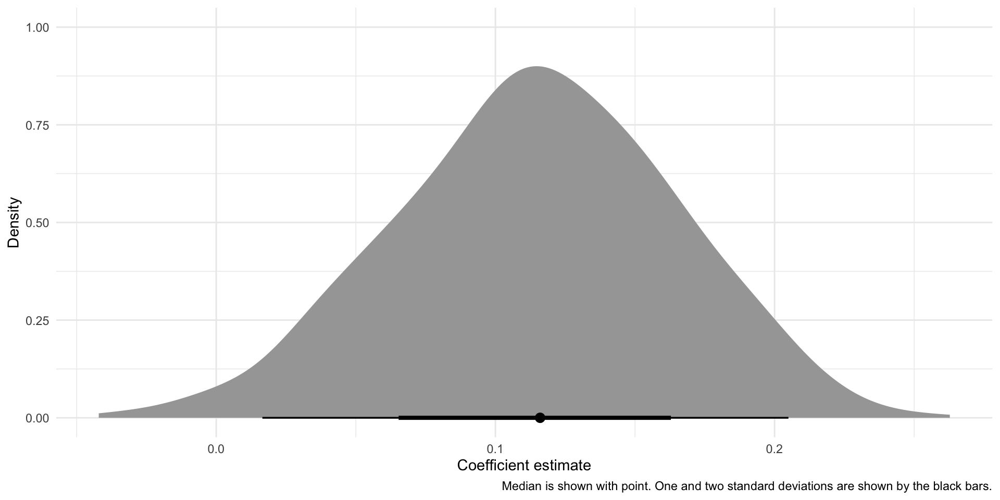
Here is the distribution of those 1,000 different coefficients for disposal efficiency for each model. We can see a wide range of estimates for the relationship between disposal efficiency and Dream Team points. Some samples even led our model to estimate a negative relationship!
Next, we can look at the intercept estimates:
afl_regressions |>
unnest(model) |>
filter(term == "(Intercept)") |>
ggplot(aes(x = estimate)) +
stat_halfeye() +
theme_minimal() +
labs(x = "Coefficient estimate",
y = "Density",
caption = "Median is shown with point. One and two standard deviations are shown by the black bars.")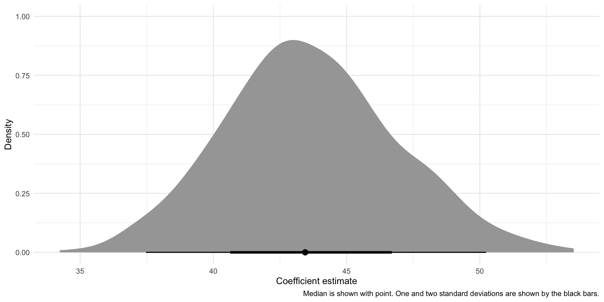
Again, we have a wide range of estimates. Some are more common than others: the average of our 1,000 estimates (43.637) is the most common one produced. Estimates far from that average are less common. Similarly, the average of the 1,000 estimates produced for the disposal efficiency variable (0.115) was the most common one produced.
We can use this knowledge to focus back on that single regression model that we built right at the start of this session. Those averages are very, very close to the estimates produced by that first model:
summary(m)
Call:
lm(formula = dreamTeamPoints ~ disposalEfficiency, data = afl_df)
Residuals:
Min 1Q Median 3Q Max
-51.16 -18.77 -4.29 14.42 115.49
Coefficients:
Estimate Std. Error t value Pr(>|t|)
(Intercept) 43.53517 4.42859 9.830 <2e-16 ***
disposalEfficiency 0.11626 0.06751 1.722 0.0858 .
---
Signif. codes: 0 '***' 0.001 '**' 0.01 '*' 0.05 '.' 0.1 ' ' 1
Residual standard error: 25.71 on 377 degrees of freedom
Multiple R-squared: 0.007806, Adjusted R-squared: 0.005174
F-statistic: 2.966 on 1 and 377 DF, p-value: 0.08585Building uncertainty into our single regression model
Generally, we have a single sample that we need to use to fit our models. We still need to account for the uncertainty (demonstrated above) created by random chance. Unfortunately, we only have one sample. We, therefore, need to estimate the sampling distribution that would arise from an infinite number of samples from our population using this one lonely sample. To do this, we assume that the estimates our one sample produced are (close to) the estimates that would be produced by a model fit against the population. So, we center our estimated sampling distributions at these best guesses.
# A tibble: 2 × 2
term estimate
<chr> <dbl>
1 (Intercept) 43.5
2 disposalEfficiency 0.116These are our best guesses at the true linear relationship between disposal efficiency and Dream Team points. Our best guess is that players who have a disposal efficiency of zero have, on average, 43.5 Dream Team points. Every one percentage point increase in a player’s efficiency is associated with a gain of 0.12 Dream Team points, on average.
Now, we need to build out the plausible set of intercepts and coefficients that would result from an infinite number of random samples drawn from our population. To do this, we need to work out how spread out these intercepts and coefficients would be from their center points. Formally, this spread is called the standard deviation.
The standard deviation, \(s\), is calculated using two pieces of information. First, it looks at how well our line of best fit (our regression model) fits our observed data. How far are the predicted values (represented by the blue line on the below graph) from the observed values (represented by the black dots)?
ggplot(afl_df, aes(x = disposalEfficiency, y = dreamTeamPoints)) +
geom_point() +
geom_smooth(method = "lm", se = F) +
theme_minimal()We will have more uncertainty around our intercept and coefficient if the distance between the predicted values and observed values is large. This makes sense: if the predicted values and the observed values were very similar, we are unlikely to find a wildly different line of best fit from a different random sample from our population.
The standard deviation also takes into account the amount of information you have used to generate this intercept and coefficient. Greater sample sizes using less variables result in less uncertainty around those model coefficients.
In sum, the standard deviation is calculated as:
\[ s = \sqrt{\frac{\sum{e_i^2}}{n-k-1}} \]
Where \(e_i\) is the difference between each predicted value and observed value (the vertical distance between each point and the blue line on the graph above).
\(n-k-1\) is the degrees of freedom in the model. It accounts for the amount of information you used to build the model, with \(n\) equal to the number of observations you used and \(k\) equal to the number of independent variables you included. Here, our \(n =\) 379 because that’s the number of observations (players) we used to fit the model, and \(k=1\) because we are only using one independent variable: disposal efficiency.
We can use this spread to work out our standard errors around our coefficients. Broadly, the standard error places this uncertainty within the context of the model.
For the intercept, it is:
\[ SE_{\beta_0} = s(\sqrt{\frac{1}{n} + \frac{\bar{x}^2}{\sum{(x_i-\bar{x})^2}}}) \]
For the coefficients, it is:
\[ SE_{\beta_1} = \frac{s}{\sqrt{\sum{(x_i-\bar{x})^2}}} \]
Tip
You will calculate all of this in the background. Do not worry about memorizing these formulas. I put them here to help build your intuition about what goes into your uncertainty around the relationship you find between your outcome of interest and the variables you think drive that outcome.
Happily, broom::tidy() calculates all of this for us:
# A tibble: 2 × 3
term estimate std.error
<chr> <dbl> <dbl>
1 (Intercept) 43.5 4.43
2 disposalEfficiency 0.116 0.0675Okay, so we have a good sense of the spread around our best guess. Let’s visualize this. We will start with the disposal efficiency coefficient estimate:
tibble(
x = rnorm(1e6,
mean = tidy(m) |> filter(term == "disposalEfficiency") |> pull(estimate),
sd = tidy(m) |> filter(term == "disposalEfficiency") |> pull(std.error))
) |>
ggplot(aes(x = x)) +
stat_halfeye() +
theme_minimal() +
labs(x = "Coefficient estimate",
y = "Density")Above, we show the plausible set of coefficients describing the effect of a one percentage point increase in a player’s disposal efficiency on their Dream Team points, on average. Remember, our best guess (taken from our regression model) is that a one percentage point increase in efficiency is associated with a 0.12 increase in a player’s Dream Team points, on average. However, as we saw above when we built 1,000 different models from 1,000 different random samples, it is entirely plausible that we could get different coefficients from a model built from a different sample. These differences are the product of random chance. That’s fine! We just need to acknowledge that.
Let’s also visualize all of the plausible intercepts we could get:
tibble(
x = rnorm(1e6,
mean = tidy(m) |> filter(term == "(Intercept)") |> pull(estimate),
sd = tidy(m) |> filter(term == "(Intercept)") |> pull(std.error))
) |>
ggplot(aes(x = x)) +
stat_halfeye() +
theme_minimal()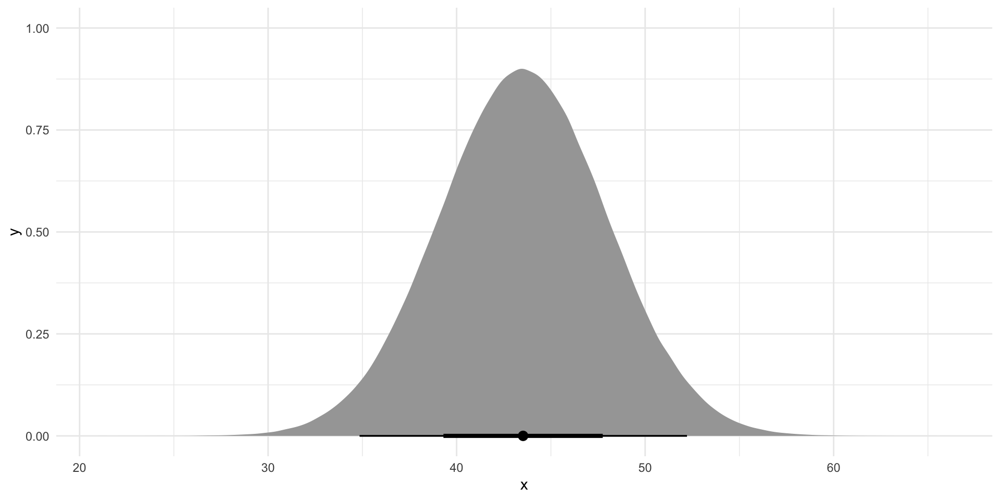
Again, our best guess is that players who have a disposal efficiency of zero have, on average, 43.5 Dream Team points. This is one of many plausible intercepts that we could generate.
Connecting this to our research question
We used our data to uncover an interesting relationship between disposal efficiency and Dream Team points. On average, as your disposal efficiency increases, so too do your Dream Team points. We found that if players who increased their disposal efficiency by one percentage point saw an increase of 0.12 Dream Team points, on average.
Now, imagine that you are a player and you want to increase your Dream Team points. Do you trust this? Do you really believe that by increasing your disposal efficiency you will increase your Dream Team points? What if, in fact, there is no relationship between these two variables?
We know from above that there are a range of plausible intercepts and coefficients that result from random chance. Does this plausible range include zero? In other words, is it plausible that there is no relationship between the outcome of interest (Dream Team points) and your independent variable (disposal efficiency)?
First, we need to define what we mean by a plausible range of relationships. Traditionally, we are willing to accept a five percent risk that we declare that there is a relationship between an outcome and an independent variable when there is, in fact, no relationship. Let’s stick with that threshold.
Note
The political science journal articles you have read will often talk about a p-value of 0.05. This threshold of a five percent risk that we declare that there is a relationship between an outcome and an independent variable when there is, in fact, no relationship is the functional definition of that p-value.
Okay, so now we need to work out where the other 95 percent of plausible values sit. Let’s start with the coefficient describing the relationship between Dream Team points and disposal efficiency. Here is our representation of the coefficients drawn from an infinite number random samples pulled from our population (it is the same as printed above):
tibble(
x = rnorm(1e6,
mean = tidy(m) |> filter(term == "disposalEfficiency") |> pull(estimate),
sd = tidy(m) |> filter(term == "disposalEfficiency") |> pull(std.error))
) |>
ggplot(aes(x = x)) +
stat_halfeye() +
theme_minimal() +
labs(x = "Coefficient estimate",
y = "Density")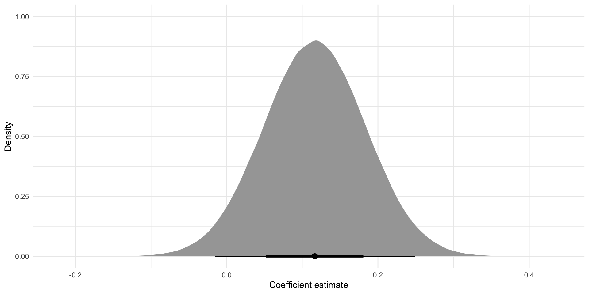
Where do 95 percent of these coefficients fall around our best guess? Because we estimated the spread of our estimates using the standard error, we cannot use the usual (and helpful) standard Normal distribution to answer this question. Instead, we need to look at a similar, but different distribution: the t-distribution.
The t-distribution
The t-distribution is very similar to the Normal distribution, but it depends on one important factor that the Normal distribution does not: the amount of information you used to fit your model.
There are an infinite number of t-distributions. Each is defined by its degrees of freedom. Degrees of freedom account for both the number of observations and the number of independent variables you used to fit your model. We will discuss how to use the t-distribution below, but for now here are some t-distributions with different degrees of freedom:
ggplot() +
geom_density(aes(x = rt(1e6, df = 5)), colour = "red") +
geom_density(aes(x = rt(1e6, df = 50)), colour = "blue") +
geom_density(aes(x = rt(1e6, df = 5000)), colour = "grey") +
theme_minimal() +
scale_x_continuous(limits = c(-5, 5))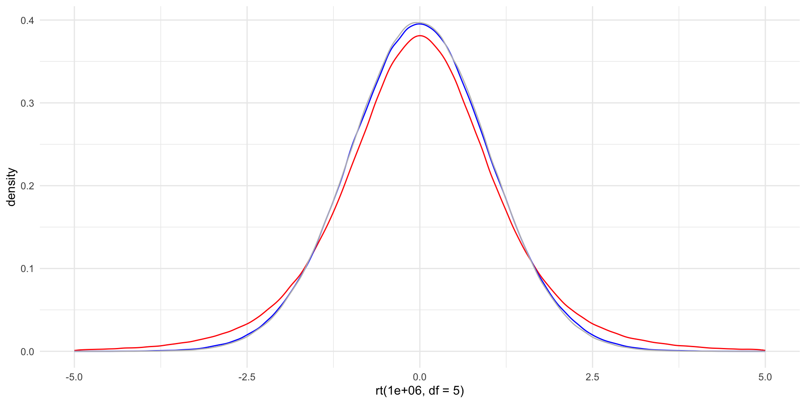
The important thing to note here is that the t-distribution punishes you for using too little information to fit your models. The tails on the distribution with the smallest degrees of freedom (coloured in red) are fatter than the distributions with higher degrees of freedom. As you will learn below, this makes the bar required to reach statistical significance more difficult to clear.
Another thing to note is that this effect is diminishing in the amount of information (degrees of freedom) you have. Note that the difference between the distribution with five degrees of freedom and that with 50 is much larger than the difference between the distribution with 50 degrees of freedom and that with 5000. Practically, once you have more than a few observations and you do not cram your model with many independent variables, you will not be punished too harshly.
Finally, as the degrees of freedom increase, the t-distribution increasingly resembles the Normal distribution.
We need to use our knowledge of the t-distribution to answer this question. We know that center point (our coefficient):
We know how spread out our alternative coefficients are from that center point (our standard error):
[1] 0.06750683And we know our threshold (5%). We need to translate that threshold into its t-statistic, accounting for the degrees of freedom we have access to:
sample_size <- nrow(afl_df)
sample_size[1] 379no_of_IVs <- 1
no_of_IVs[1] 1df <- sample_size - no_of_IVs - 1
df[1] 377Therefore:
t_stat_95 <- qt(0.025, df = df, lower.tail = F)
t_stat_95[1] 1.966276This is the point beyond which 2.5% of all values along the t-distribution fall.
Tip
Remember, we want to find out where 95 percent of these alternative coefficients sit around the center point. So, we need to distribute our remaining five percent between the two tails. That’s why we find the t-statistic beyond which 2.5% of the data fall.
Now we can find the boundaries within which 95 percent of these alternative coefficients fall using the following formula:
\[ CI = \beta_1 \pm t*SE_{\beta_1} \]
lower_ci <- beta_1 - t_stat_95*se_beta_1
lower_ci[1] -0.01647391upper_ci <- beta_1 + t_stat_95*se_beta_1
upper_ci[1] 0.2490003Let’s place those in context:
tibble(
x = rnorm(1e6,
mean = tidy(m) |> filter(term == "disposalEfficiency") |> pull(estimate),
sd = tidy(m) |> filter(term == "disposalEfficiency") |> pull(std.error))
) |>
ggplot(aes(x = x)) +
stat_slab(aes(fill_ramp = after_stat(x < lower_ci | x > upper_ci))) +
theme_minimal() +
theme(legend.position = "none") +
labs(x = "Coefficient estimate",
y = "Density")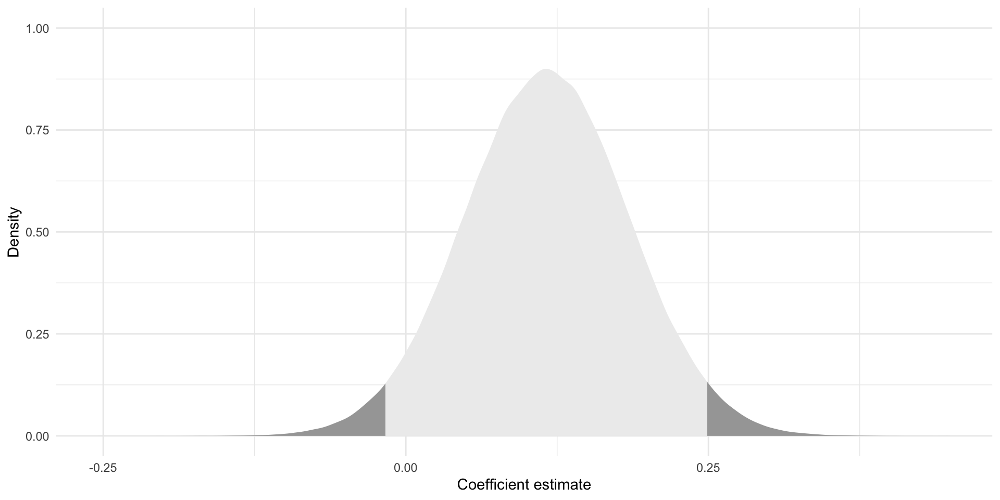
Brilliant! Now we know where 95 percent of all alternative coefficients drawn from a random sample of our population could fall. These are our plausible alternative coefficients.
So, do these plausible alternatives include zero? In other words, is it plausible that there is no relationship between a player’s disposal efficiency and their Dream Team points?
tibble(
x = rnorm(1e6,
mean = tidy(m) |> filter(term == "disposalEfficiency") |> pull(estimate),
sd = tidy(m) |> filter(term == "disposalEfficiency") |> pull(std.error))
) |>
ggplot(aes(x = x)) +
stat_slab(aes(fill_ramp = after_stat(x < lower_ci | x > upper_ci))) +
geom_vline(xintercept = 0) +
theme_minimal() +
theme(legend.position = "none") +
labs(x = "Coefficient estimate",
y = "Density")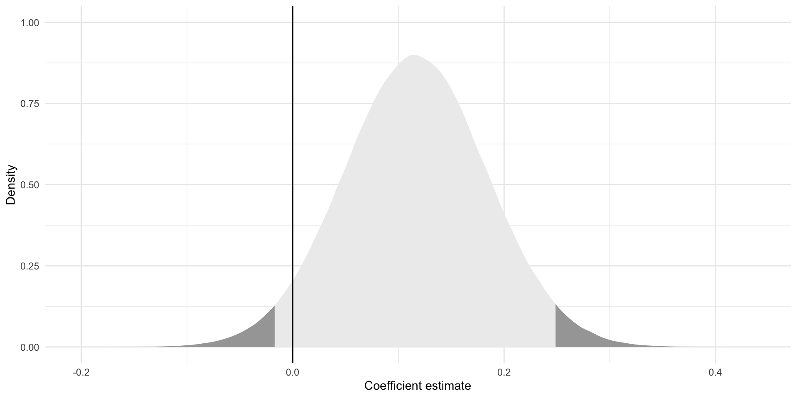
Yes! A null relationship sits within our plausible set of coefficients for disposal efficiency. We cannot reject the notion that there is no relationship between disposal efficiency and Dream Team points at this threshold.
What about a more forgiving threshold? What if we are willing to accept a 10 percent chance that we reject a true null relationship?
First, we need to find this new threshold’s t-statistic:
t_stat_90 <- qt(0.05, df = df, lower.tail = F)
t_stat_90[1] 1.648905And; therefore, our new boundaries (within which 90 percent of alternative coefficients sit):
lower_ci <- beta_1 - t_stat_90*se_beta_1
lower_ci[1] 0.004950792upper_ci <- beta_1 + t_stat_90*se_beta_1
upper_ci[1] 0.2275756Do these contain a null relationship?
tibble(
x = rnorm(1e6,
mean = tidy(m) |> filter(term == "disposalEfficiency") |> pull(estimate),
sd = tidy(m) |> filter(term == "disposalEfficiency") |> pull(std.error))
) |>
ggplot(aes(x = x)) +
stat_slab(aes(fill_ramp = after_stat(x < lower_ci | x > upper_ci))) +
geom_vline(xintercept = 0) +
theme_minimal() +
theme(legend.position = "none") +
labs(x = "Coefficient estimate",
y = "Density") +
labs(x = "Coefficient estimate",
y = "Density")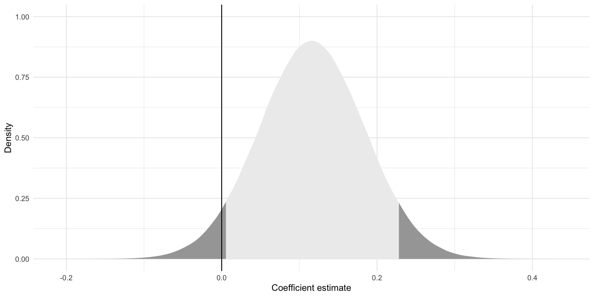
No! So, if we are happy to accept a 10 percent risk that we will believe a relationship exists where one, if fact, does not, we can reject the null hypothesis that there is no relationship between disposal efficiency and Dream Team points. We can tell the players that we have found a statistically significant relationship between disposal efficiency and Dream Team points at the 0.1 threshold.
We can approach this question from the other direction. If the null hypothesis were true, how likely would we be to see our estimate?
First, let’s set up our null world:
tibble(
x = rt(1e6, df = df)
) |>
ggplot(aes(x = x)) +
stat_slab() +
theme_minimal() +
theme(legend.position = "none") +
labs(x = "t",
y = "Density")I am back to random draws from our t-distribution.
Here, we have centered our distribution of alternative coefficients (resulting only from differences in our samples brought about by random chance) at zero. We are in the null world: there is no relationship between disposal efficiency and Dream Team points.
Where does the estimate we found in our sample sit within this null world? First, we need to translate that observed estimate into its t-statistic:
\[ t = \frac{\beta_1}{SE_{\beta_1}} \]
t_stat <- beta_1 / se_beta_1
t_stat[1] 1.722243Let’s place this in the context of the null world:
tibble(
x = rt(1e6, df = df)
) |>
ggplot(aes(x = x)) +
stat_slab() +
geom_vline(xintercept = t_stat) +
theme_minimal() +
theme(legend.position = "none")How likely is it that I would get this coefficient or a more extreme coefficient if we did, in fact, live in the null world? In other words, what proportion of these alternative coefficients (highlighted in dark gray on the graph below) are equal to or more extreme than our observed estimate?
Tip
Remember that we are conducting a two-tailed test of our null hypothesis. We need to be open to the estimate being greater or smaller than the null.
tibble(
x = rt(1e6, df = df)
) |>
ggplot(aes(x = x)) +
stat_slab(aes(fill_ramp = after_stat(x < -t_stat | x > t_stat))) +
geom_vline(xintercept = t_stat) +
theme_minimal() +
theme(legend.position = "none")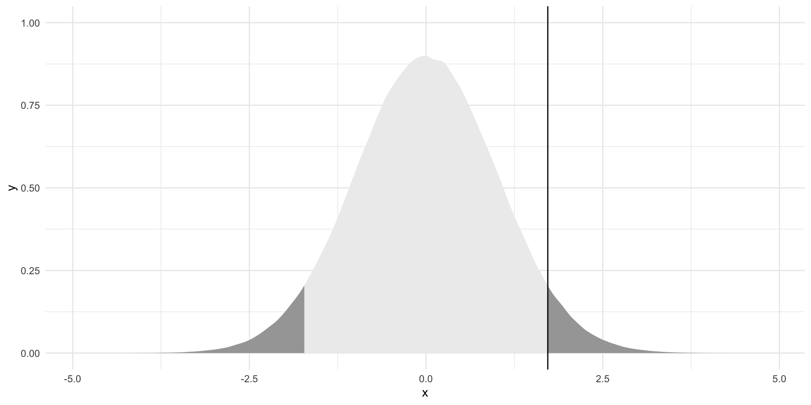
The proportion of alternative coefficients that are equal to or more extreme than the one we observed is:
p_value <- 2 * pt(t_stat, df = df, lower.tail = F)
p_value[1] 0.08584565We would observe an estimate of 0.116 or a more extreme estimate 9% of the time if the null hypothesis were true. When we are only happy to accept a five percent chance that we would reject a true null hypothesis, we cannot reject that null hypothesis. If, on the other hand, we are happy to accept a 10 percent chance that we reject a true null hypothesis, we can reject it.
Reading our regression outputs
Let’s return to our original model:
tidy(m)# A tibble: 2 × 5
term estimate std.error statistic p.value
<chr> <dbl> <dbl> <dbl> <dbl>
1 (Intercept) 43.5 4.43 9.83 1.87e-20
2 disposalEfficiency 0.116 0.0675 1.72 8.58e- 2We now have information on every component of this output.
We can translate these estimates, in the estimate column. Our model suggests that players that have a disposal efficiency of zero (none of their disposals result in a good outcome for their team) have, on average, 43.5 Dream Team points. Every one percentage point increase in a player’s efficiency is associated with a gain of 0.12 Dream Team points, on average.
We know that these estimates are our best guess of the true linear relationship between Dream Team points and disposal efficiency. Our best guess may be different from the true relationship because of random chance. How confident are we of that best guess? Well, we know from the standard error (std.error) how spread out around that best guess alternative coefficients sit.
We know where our estimate (translated into its t-statistic, or statistic) sits within the null world.
And finally, we know the probability (p.value) that we would observe the estimate we found if it were actually equal to zero.
All of that work we did above is replicated here, in this one line of code. In fact, we can also add our confidence intervals around our estimate to the broom::tidy() output:
tidy(m, conf.int = T)# A tibble: 2 × 7
term estimate std.error statistic p.value conf.low conf.high
<chr> <dbl> <dbl> <dbl> <dbl> <dbl> <dbl>
1 (Intercept) 43.5 4.43 9.83 1.87e-20 34.8 52.2
2 disposalEfficiency 0.116 0.0675 1.72 8.58e- 2 -0.0165 0.249These are exactly as we manually calculated above.
What would this all look like in a published article?
modelsummary(m,
coef_rename = c("disposalEfficiency" = "Disposal efficiency"),
statistic = c("std.error"),
stars = T)| (1) | |
|---|---|
| + p | |
| (Intercept) | 43.535*** |
| (4.429) | |
| Disposal efficiency | 0.116+ |
| (0.068) | |
| Num.Obs. | 379 |
| R2 | 0.008 |
| R2 Adj. | 0.005 |
| AIC | 3540.6 |
| BIC | 3552.5 |
| Log.Lik. | -1767.321 |
| RMSE | 25.64 |